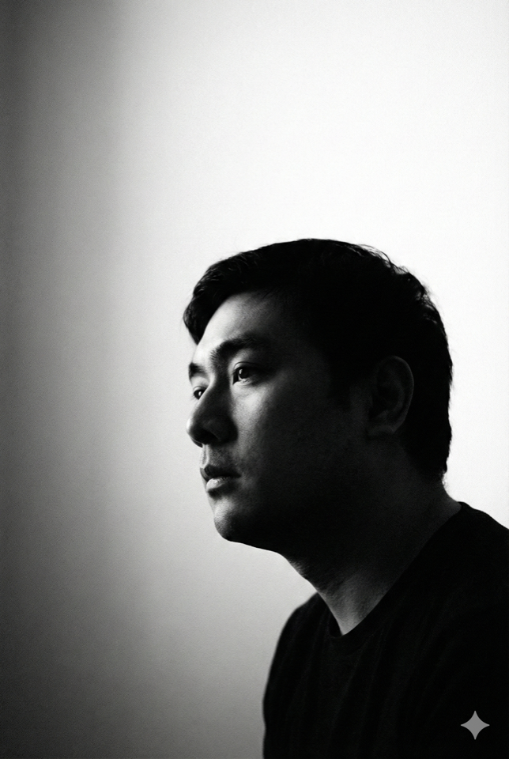

Face Mask — AR mobileFace Mask — AR 移动端
Interactive AR filters with 3D accessories and particles in Unity.
Unity 实现的 AR 滤镜与 3D 配饰、粒子效果。

Vancouver, BC · Full-stack & cloud 加拿大温哥华 · 全栈与云原生
I build user-focused web applications with React, Java & Spring Boot, and ship them on Azure & AWS with Docker, Kubernetes, and solid CI/CD and observability. 专注用 React、Java / Spring Boot 构建以用户为中心的应用，在 Azure 与 AWS 上结合 Docker、Kubernetes 与 CI/CD、可观测性交付可靠系统。
Education and experience aligned with my public LinkedIn profile. 教育与工作经历与公开领英主页保持一致。
New York Institute of Technology — Vancouver
The George Washington University
University of Minnesota
Accentrust · Vancouver, BC
Outlier · Vancouver, BC
Leisure Center · Vancouver, BC
Baifendian · Wuhan, China
Highlights from coursework and personal builds. 来自课程与个人项目的亮点。
Interactive AR filters with 3D accessories and particles in Unity.
Unity 实现的 AR 滤镜与 3D 配饰、粒子效果。
VR house-moving experience for Meta Quest 2.
面向 Meta Quest 2 的 VR 搬家模拟体验。
BERT-based NLP pipeline to detect and reconstruct spam text.
基于 BERT 的 NLP 流程，用于检测与重构垃圾短信。
MySQL schema and queries for a clinic workflow.
面向诊所流程的 MySQL 设计与查询实现。
Repositories and experiments live on my profile. 更多仓库与实验见 GitHub 主页。